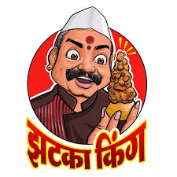
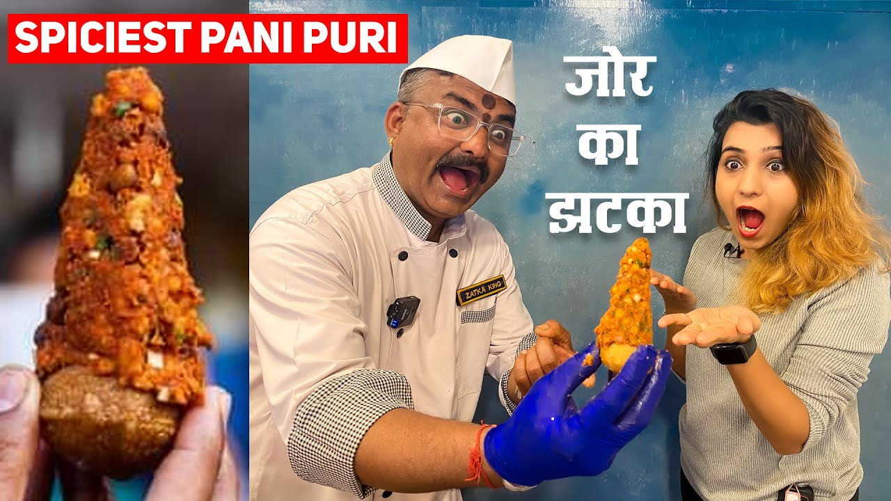

Simple Pani Puri Recipe

Ingredients (for 20 puris):

- 20 puris (store-bought or homemade)
- 2 potatoes, boiled and diced
- 1 cup chickpeas, boiled
- 1 cup tamarind chutney
- 1 cup mint chutney
- Spiced water: 4 cups water, 1 tbsp chaat masala, 1 tsp cumin, salt, lemon juice
Instructions:

- Prepare spiced water by mixing ingredients and chilling.
- Crack a small hole in each puri.
- Fill with potatoes, chickpeas, and chutneys.
- Pour in spiced water and eat immediately!